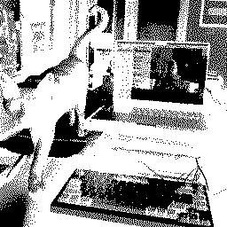
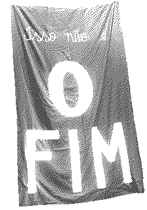
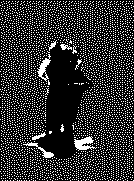
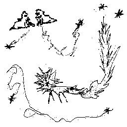
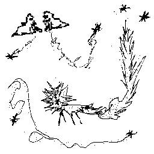

log
bits, links, scrappy fiddles, all the things, in reverse chronological order. updated daily sometimes.
jump to the bottom ?
as I've become the garbage fairy at the local community kitchen, I've become a friend and playground to the stinkbugs, I keep finding them in my clothes and hair. maybe I'm their new treehouse. a strange synchronicity; the friendliest ones share colours with WASTE EATER, a game I think about a lot.
nervous circles.my first time really live-coding! ahhhhh!
ahhh bugs! I dream of Phobos falling.this page has been sitting in secret on my site for like three months now, I've just sent it to a few friends because it's part of a bigger thing, maybe, but there's no reason for it to be a secret for now. I gave the page new love with some custom colours in just two trusty lines of CSS!
#faea locket full of love that my mum was given by her best friend. it's pretty delightful to give such close attention to something so delicate, to spend 3 hours illustrating for it to only be about a kilobyte in size.
worker, man. incremmamentising other mens' eschatons, clearing the offal sewer-side, letting the families believe simpler civic polygons, you've a pride in your own pride.
went for a ride with words caught in my teeth: shortcut shortcut shortcut actually longer but shadier and calmer lost in your streets guess I'll be following these signs a lot more this year asphalt smiles in the ground grounding found myself to a paved pedestrian path like the good little electrode I am. slowed down to gauge sentiments glaring off my sunnies: look drive way crossing free take swap you are extremely hot and dangerous tell your dog I said hi I love going fishing with you
uploaded a couple songs I made this year to my soundcloud. I do electronic music very occasionally, excited to make more time for it :]
also added a few bits to ethics.
off day. offal tells me don't go that way. surrounded myself with maybe somedays. at least tomorrow it'll be yesterday. year year year year month month day dayplaying with primes.
I guess I'm on a December Adventure !? I will not forget the abbatoirs.
a spontaneous Talking Heads cover ❤︎
coded a sad little information-loss-button.
toyed with my collection of 88x31s + now the button on the home page changes with light/dark mode ☾
summer
a scene described to me in haiku by a cat, in a garden, as another Spring passes on. and less. He senses something terrible awaiting; A loose thread, a worsening. a waste of good stinkbugs.and less.
biking around town dropping zines into mailboxes.
normalise sharing scrappy fiddles!started a web site collection.


a little graff glyph from a cool Seeker I know.
a brief note on ethics.
I showed up at my friends' woodwork studio to see if I could lend a hand, and spent a lot of time taking photos of the various curios and textures around the place. I think I kinda loaded them with the expectation that I'd collage them into something Really Cool, and I don't love the result. Maybe the process I went through was just not very inspiring—lots of automation with command-line software—or it didn't leave enough room for intention. Felt like I was just pushing pixels around for 45 mins until I was sick of it. Here it is, anyway, in the interest of sharing scrappy fiddles or something. I can always come back to it, of course.
 look what fear's done to my body.
look what fear's done to my body.
sitting on my grandma's balcony, looking for the moon, but it's cloudy and the only light in the sky is a Shell sign.
chords
F | 0 2
A | 3 0 0 0 3 0
C | 2 2 4 4 2 2
G | 4 4 4 4 4 4
C | 4 4 4 4 0 0
e | 0 3
sitting by the ocean on beautiful Gubbi Gubbi country, watching my brother slip around the rocks like a little slug-cat, playing a melodica with marks on it left by my teeth when they were first growing.
awoken at dawn by a giant Schnauzer pup sneezing, just in time to join the dawn chorus.
I wrote a nice song, but didn't write it down or record it. It went something like this:
capo on 4, pour your heart out.
D |
A |
D |
F#|
A |
d |
going on a little getaway. a week offline with my brother, a guitar, two melodicas and two silly dogs by the beach.
two years ago today I sent this scrappy recording of one half of Gatekeeper by Feist to a new friend I'd made, who has a beautiful singing voice. I thought it was a nice gift, hoping they'd sing the other half back, but they didn't. I'm a more confident singer now and it was fun to duet with myself, anyway. it'd really warm my heart to hear your scrappy take on this song (yes, you, hello friend, I'm sure you've got a lovely singing voice, but no pressure xo).
wandering charlie's garden.
today I learnt a website doesn't even need a domain, it can be like a phone number in your address book! the more I learn about the web the more amazed I am at how liberated and people-powered it can be.
worked a little more on a little dither tool. I'm enjoying doing a little bit of coding in my pyjamas each morning. It was starting to get not fun, so I put on a nice colourful outfit, went to the garden and picked some strawberries with a neighbour and her granddaughter. I came back fresh-brained and cracked the resizing algorithm. In a bookshop on a rainy afternoon, a friend wandered in just as I was polishing it off. She took a reverse-selfie to try it out, quickly uncovering bugs, which I quickly fixed.
☾ Luna was a vermillion~ arc over the ocean this evening.(with an open chord) don't do too much.
Words bounced around my head all day. I thought about putting them down here, but gave them a little time instead. Before bed I picked up my guitar and played some old chords and the words came out as a song;
a softening.You look seventeen, he said, in my almost-too-small dungarees, that I had not worn in that long. I hope not, I thought. I was a very sad seventeen year old. I hope I am more child now than I was then.
 if you want to make something big, first make something small and something small and something small.
if you want to make something big, first make something small and something small and something small.
Movember has come. I'm once again staring down my gender dysphoria and letting the stubble bloom. Dykes can have cute moustaches, too.
- Some sticky notes in my peripheral:
- the 'net is for connecting people to people.
- meatspace misses you!
hallowe'en

cast a protective spell for my hard drive; losing her is about the spookiest thing I can think of right now.
now, again.I've thought about updating my now page for a few days now and it's become a bit of a project in my head, which has made me put it off. I'm concerned about it going out of date, about feeling an obligation to update it. Maybe I feel like being reflective around this time of the month, maybe I don't, that's okay. It's a setting of intentions, which I hope will stay relevant for a time.
I'm sitting at my computer with a little text editor window open to a file called nownownow dot txt.achiral archival
started this log, inspired by brian crabtree.
maybe I'll go back in time through my git history since I started this site and retroactively make a log of all the nice stuff I've made, like a pat on the back for my past self.
shared homestead, a poem I'm a little bit proud of.
so much past inside my present.
 stole a big rock.
stole a big rock.
added alt text to the guitar tab for eleven ladybugs — an experiment, I don't know how well I'll be able to describe the rest of my tabs.
 started collecting rocks.
started collecting rocks.
Beka got herself a plasticky guitar to learn on, with an inbuilt tuner, an unexpected collaborator. She didn't know what standard tuning was, so she just turned each head until it glowed blue to indicate it was tuned to a whole tone, and she ended up with a beautiful open chord tuning. I started noodling around the chords below and we had a really killer jam, then I quickly recorded some of what we came up with outside under a lemon tree full of stinkbugs.
G | x x x x 3 5 A#| 0 0 0 0 2 3 D#| 2 3 2 3 0 0 C | 0 0 1 3 0 0 A#| 2 3 2 3 0 0 d#| 0 3 2 0 0 0
 

what makes your heart sing?
spring
Mum gave me an old film camera and a new superpower: it's incredibly grounding to lie in the grass and look through the viewfinder with my non-dominant eye, shifting focus.
winter
it got cold and I got sad for a while.
- a little dither tool.
- yearn - my first web poem.
autumn
started this site.